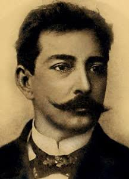
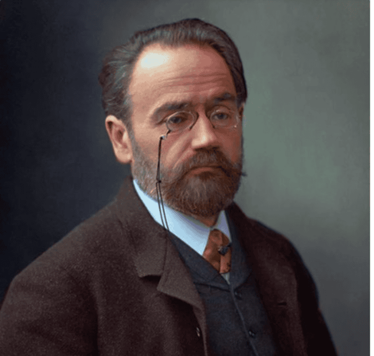
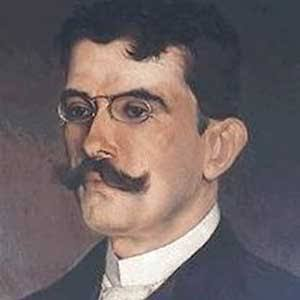
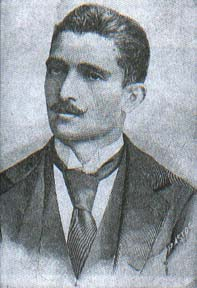

Aluísio Azevedo
Pioneiro do Naturalismo no Brasil, autor do aclamado romance de cortiço O Cortiço e de O Mulato.

Pioneiro do Naturalismo no Brasil, autor do aclamado romance de cortiço O Cortiço e de O Mulato.

Teórico e principal expoente do Naturalismo mundial, autor de obras fundamentais como Germinal.

Autor de O Ateneu, obra com fortes traços naturalistas na análise do comportamento humano em confinamento.

Autor de A Normalista e do polémico romance Bom-Crioulo, marco do Naturalismo brasileiro.
O Naturalismo radicalizou a proposta do Realismo ao aplicar as teorias científicas do século XIX (como o Determinismo, o Positivismo e o Darwinismo) à literatura. O ser humano passou a ser retratado como um produto biológico, condicionado pelo meio ambiente, pela hereditariedade e pelo momento histórico.
No Brasil, o movimento iniciou-se em 1881 com a publicação de O Mulato, de Aluísio Azevedo. A prosa naturalista destaca-se pela análise do comportamento coletivo, pela denúncia dos vícios sociais e pela representação dos instintos humanos mais primitivos e passionais.